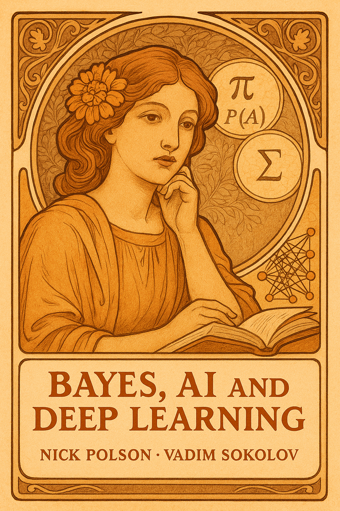

Bayes, Artificial Intelligence, and Deep Learning Foundations of Data Science
By Nick Polson and Vadim Sokolov.


Description
Modern AI rests on one principle: learning from data under uncertainty. This book builds that principle from the ground up, from Bayes’ rule and decision theory to the transformers behind today’s large language models.
Three parts follow the way the ideas developed. Bayesian learning covers probability, utility and decisions, A/B testing, hypothesis testing, stochastic processes, Gaussian processes and reinforcement learning. Statistical learning covers data and pattern matching, regression, logistic regression, tree models, forecasting and model selection. Deep learning covers neural networks, stochastic gradient descent, convolutional networks, language models and AI agents. Worked examples come from finance, sports, medicine, marketing and operations, with code in R and Python and exercises at the end of every chapter.
Unlike treatments that present machine learning as a toolbox of algorithms, this book treats uncertainty as a first class concern and shows how linear regression, logistic regression and neural networks sit inside one probabilistic framework. Readers learn to quantify what a model does not know, to turn a prediction into a decision, and to see why large language models hallucinate.
The book grew out of courses the authors teach to MBA students at the University of Chicago Booth School of Business and to engineering students at George Mason University. It assumes introductory statistics and high school calculus and suits graduate students, data scientists and practitioners who want the mathematics behind the methods.
How to cite
Polson and Sokolov (2026), Bayes, Artificial Intelligence, and Deep Learning: Foundations of Data Science, edition 1, https://doi.org/10.5281/zenodo.23603837.
@book{polsonsokolov2026bayes_ai_deep_learning,
author = {Polson, Nick and Sokolov, Vadim},
title = {{Bayes, Artificial Intelligence, and Deep Learning: Foundations of Data Science}},
year = {2026},
publisher = {Independently published},
doi = {10.5281/zenodo.23603837},
url = {https://vsokolov.org/books/bayes_ai_deep_learning/}
}Main results
- Posterior probability that Nakamura did not cheat given a 45 win streak (Example 2.10, page 82): Under Anand’s prior of 1 in 10000 and a binomial model of the streak, the posterior probability that Nakamura did not cheat is 0.9965. Status: conditional on prior odds of innocence N = 10000, the assessment attributed to Viswanathan Anand (N = 500 in the sensitivity analysis), a streak of 45 wins in 46 games with a draw counted as not a win, independent games with one common win probability q = 0.8916 (Nakamura’s own estimate), and probability 1 of the evidence under guilt.
- Polya Gamma Gibbs sampler for Bayesian logistic regression (Section 13.7.1, page 445): For binomial logistic regression with a Gaussian prior, alternating a Polya Gamma draw of one latent variable per observation with a multivariate normal draw of the coefficients gives a two step Gibbs sampler. Status: conditional on the two conditional distributions, which the chapter quotes from Polson, Scott and Windle (2013) and does not derive from the integral identity, itself stated without proof.
- Posterior concentration at the minimax rate for sparse deep learning (Section 19.9.2, page 657): Under smoothness and prior mass conditions, the posterior distribution of the regression function concentrates around the true function at the minimax rate, up to a factor of log N. Status: conditional on the smoothness and prior mass conditions of Polson and Ročková (2018), which the chapter does not state, and the result itself, which it cites without proof; the minimax rate is for Hölder smooth regression functions on the unit cube.
- Maximum expected utility by a quantile neural network (Section 21.6.1, page 700): A network trained with the check loss on simulated utilities, with the decision and the quantile level as inputs, approximates the quantile function of the utility; integrating it over the level approximates the expected utility, and the optimal decision maximizes that integral. Status: conditional on a known utility function, the ability to simulate parameters from the prior and data from the likelihood or a forward simulator, and a network that represents the quantile function of the utility; the chapter proves no approximation error, convergence rate or consistency result for the network.
All 9 results of the book (9 conditional) are on the page Results by chapter, each with its statement, status and number.
License: Text, figures and PDF: CC BY 4.0. Code: MIT.
This page is generated from the book’s repository (main). The numbers and pages are those of the PDF, version 1.0.1.